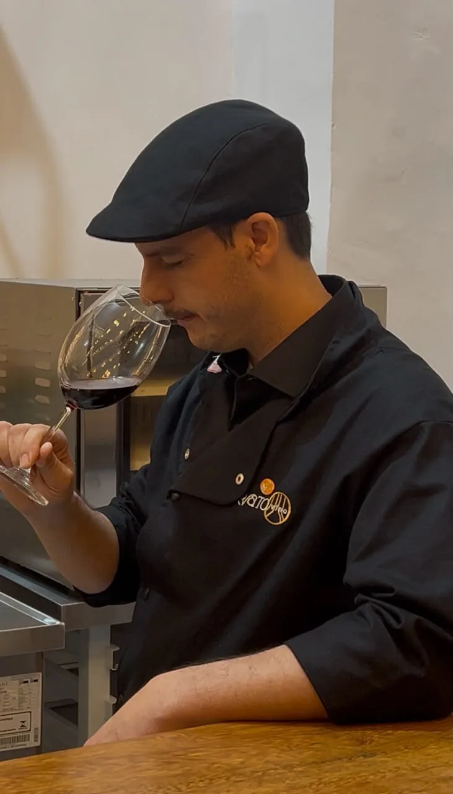
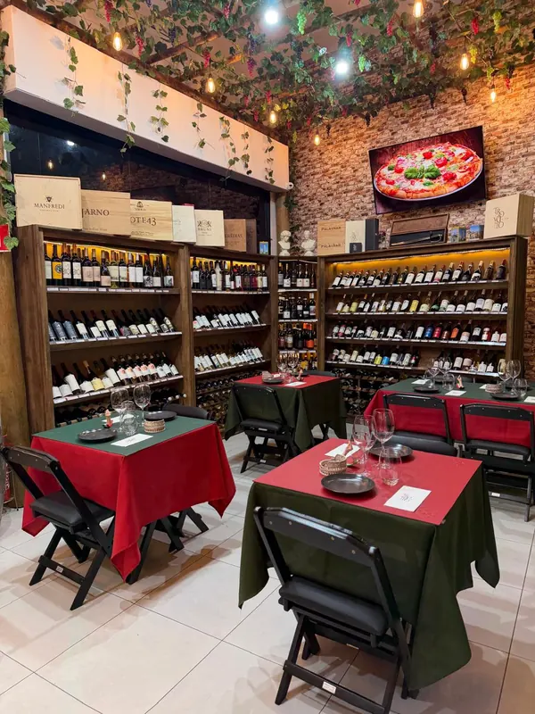
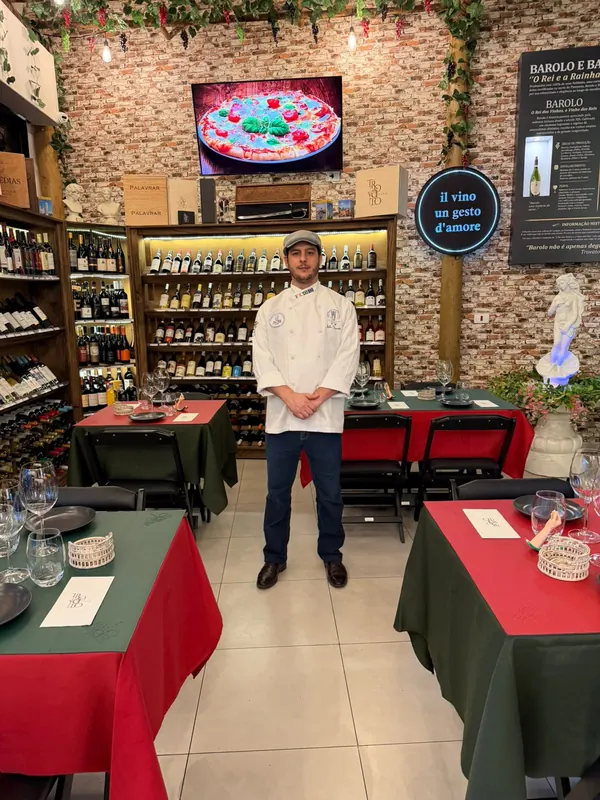
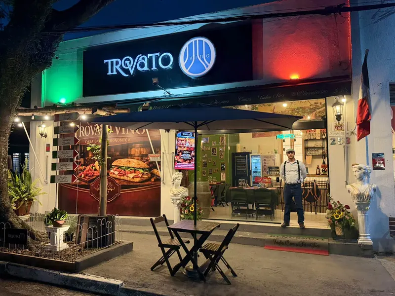
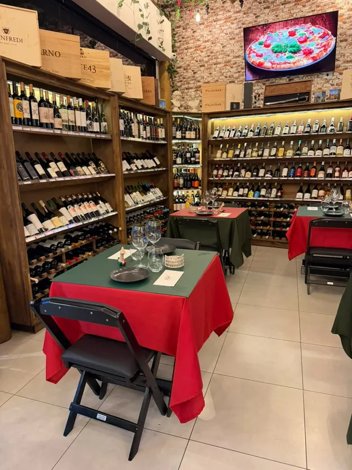
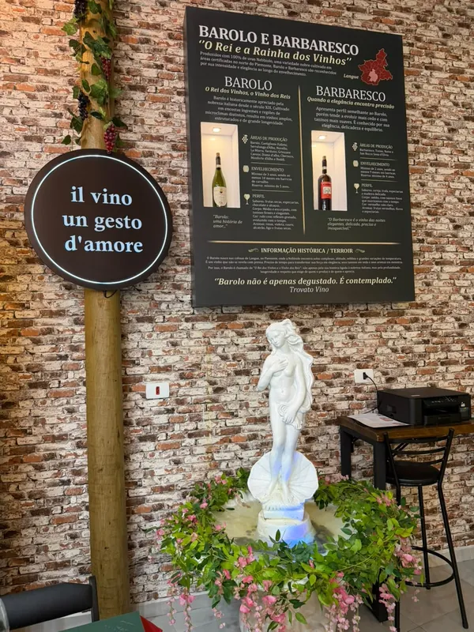
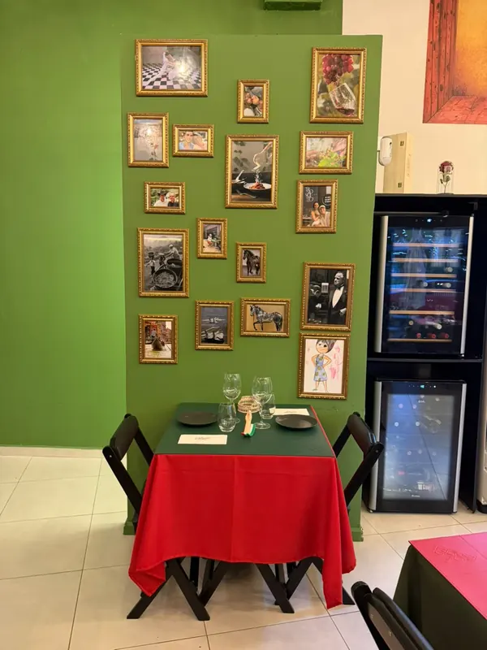
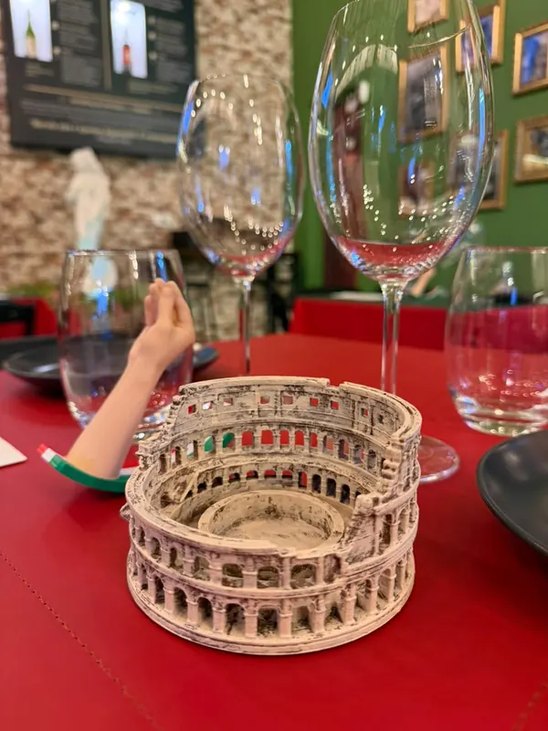
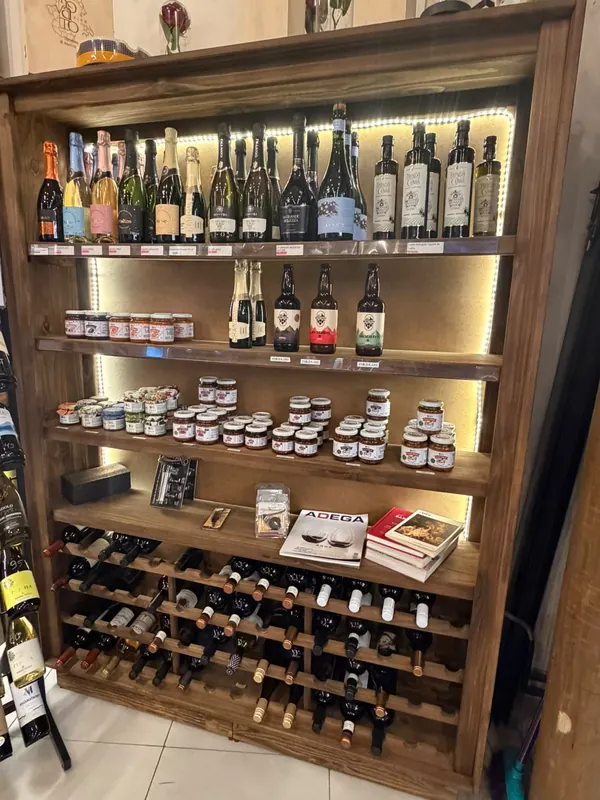

Loja de vinhos e casa enogastronômica no Parque Continental, em Osasco
Diga a ocasião. O Júlio escolhe o vinho.
Rótulos escolhidos um a um, com a Itália em destaque. Prove por taça antes de levar a garrafa, peça um panino ou um pão da Raquel e fique para a conversa.
- Aberto
- Quarta a sábado, a partir das 13h30
- Onde
- Rua Eva Terpins, 258, em frente ao Shopping Continental

La carta
O que tem na casa
Antes de sugerir um rótulo, o Júlio pergunta a ocasião, o prato e o seu gosto. Quem está começando no vinho é tão bem-vindo quanto quem já tem uma adega.
Ver o cardápio completoPara levar
-
Vinhos com curadoriasob indicação
Rótulos de vários países, com a Itália em destaque, escolhidos um a um. Diga a ocasião e o orçamento e o Júlio indica a garrafa.
Pedir uma indicação -
Presentessob consulta
Vinho na caixa de madeira com o logo da casa gravado, pronta para entregar.
Montar um presente -
Confraria Trovato em Casatodo mês
O clube de vinhos da casa: uma seleção por mês, com a história de cada garrafa e sugestões de harmonização.
Entrar na Confraria
Na taça e à mesa
-
Taça de vinhoa partir de R$ 25
Para provar antes de escolher a garrafa.
-
PaniniR$ 79 a R$ 145
Na ciabatta ou na focaccia, com burrata, prosciutto, pastrami ou mortadela com pistache. Servem até duas pessoas.
-
BruschetteR$ 69 a R$ 99
Da Nostra Casa, com búfala e pesto, à Sole d’Italia, com brie, damasco e prosciutto.
-
Tábuas de friosR$ 89 e R$ 129
Individual ou para dois. Também tem travessa de burrata e empanadas.
-
Massa fresca de sábadoa partir de R$ 39,90
Uma massa diferente a cada semana. Produção limitada.
Perguntar as massas da semana

Noites da casa
Jantares harmonizados, encontros e degustações guiadas com lugares contados. Os convites saem primeiro no grupo do WhatsApp.
Entrar no grupo de convites-
La Notte Italiana
Um jantar em três tempos, cada prato com um vinho de uma região da Itália, conduzido pelo sommelier.
-
Vino per Lei
O encontro só para mulheres: vinho, mesa posta e conversa sem pressa.
datas no grupo
-
Degustação guiada
Uma sequência de rótulos escolhidos pelo Júlio, provados e comentados com o sommelier.
datas no grupo
-
Pedir uma proposta
Confraternizações
A casa recebe o seu grupo, com menu e vinhos combinados antes.

A casa
Júlio no vinho, Raquel no forno
A Trovato Vino é tocada por um casal. O Júlio é o sommelier: escuta o que você gosta, conta a história de cada rótulo e indica a garrafa certa para o momento.
A Raquel faz os pães e as focaccias que acompanham as taças. Aos sábados, saem fornadas que os clientes já esperam.
Juntos, os dois montam o menu de forma autêntica, para oferecer o que realmente acreditam ser uma experiência. E ajudam a personalizar a sua.
A loja fica no Parque Continental, em frente ao Shopping Continental, com mesas para ficar e prateleiras para escolher.
Il vino, un gesto d’amore.
La nostra casa
Mesas postas, estantes cheias e um pedaço da Itália no Parque Continental.
-

Rua Eva Terpins, 258, à noite -

O salão entre as estantes -

Il vino, un gesto d’amore -

Mesa para dois -

Um pedaço de Roma na mesa -

Espumantes, conservas e leituras
No Google
Quem já passou por aqui
-
{{DEPOIMENTO_HELENA_ESPOZITO}}
Helena Espozito -
“Atendimento sensacional, excelente variedade de vinhos, além da simpatia dos proprietários que indicam o vinho certo para cada ocasião!! Nota 1000!”
Kiko Borges -
“A Trovato Vino é uma extensão de casa! Rs Ambiente familiar, agradável, acolhedor, com vinhos maravilhosos e pratos deliciosos! Os anfitriões, Júlio & Raquel, dão um show à parte com muito amor e atenção no atendimento.”
Michelly Barreira
Não sabe qual levar?
Mande a ocasião, o prato e quanto quer investir. A resposta vem com uma garrafa.
Dúvidas frequentes
Preciso reservar?
Para comprar vinho ou tomar uma taça, não: é só chegar no horário de funcionamento. Eventos têm vagas limitadas e são reservados pelo WhatsApp.
Posso provar antes de comprar a garrafa?
Há vinhos em taça a partir de R$ 25, justamente para provar antes de escolher a garrafa.
Não entendo de vinho. Vou saber escolher?
Vai. Antes de sugerir um rótulo, o Júlio pergunta suas preferências, a ocasião e o que vai ser servido. A casa recebe tanto quem já conhece vinho quanto quem está começando.
Que dias a loja abre?
De quarta a sábado. Quarta e quinta, das 13h30 às 21h; sexta, das 13h30 às 22h; sábado, das 11h30 às 22h. Domingo, segunda e terça a loja fecha.
Menores de 18 anos podem comprar?
Não. A venda de bebidas alcoólicas é proibida para menores de 18 anos.
A próxima noite sai antes no Instagram
Datas dos eventos, as massas do sábado e os rótulos que acabaram de chegar.
Como chegar
Rua Eva Terpins, 258Parque Continental, Osasco/SP
CEP 05327-030
Em frente ao Shopping Continental.
Horário
- Quarta e quinta
- 13h30 às 21h
- Sexta
- 13h30 às 22h
- Sábado
- 11h30 às 22h
- Domingo a terça
- fechado